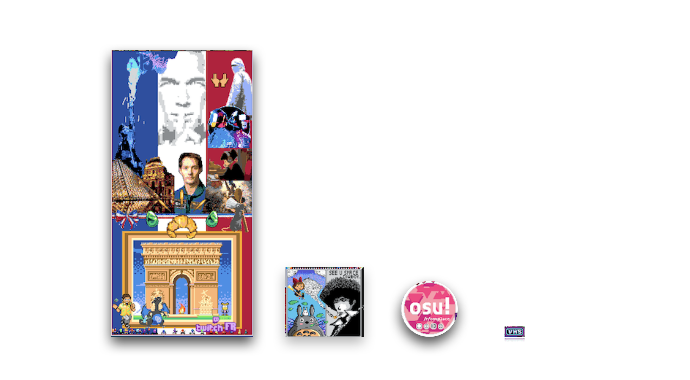

Organizational scaling in Reddit's r/place
In 2017, Reddit posted a blank canvas of a million pixels to the subreddit r/place with a limited set of instructions: any user could change one pixel to a color of their choice, every five minutes. We watched as users leveraged through their subreddits or other online communities to create art representing their community on the canvas. Groups organized to select territory, create their art, and defend that territory until the end of the days-long event. This game-experiment was repeated in 2022 and 2023, with the largest showing of more than 10 million users in 2022.
The ending state of this canvas looked like a collage of many compositions, with a huge range of sizes, from just a few pixels to tens of thousands of pixels. These different-sized compositions were often backed by groups of different sizes. Examining how aspects of the composition change with the size of their communities allows us to understand how community properties change with their size. This work ties into many decades of work in scaling laws in biology and urban systems.
Selected works:
AB Stephenson, G Falmagne, SA Levin. Understanding the scaling of social organizations using Reddit. APS March Meeting 2024, Minneapolis, Minnesota, USA, Mar 2024.